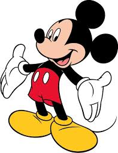

Tom and Jerry is an American animated series of short films created in 1940,by william Hanna and Joseph Barbera.
It centers on a rivalry between its two main character,Tom Cat and Jerry Mouse,and many recurring characters,based around slapstick comedy
Mickey Mouse
Mickey Mouse is a cartoon character and mascot of The wait Disney Company
He was created by Walt Disney and Ub Iwerksin 1928.
An anthropomorphic mouse who typically wears red shorts ,large yellow shoes and white gloves.